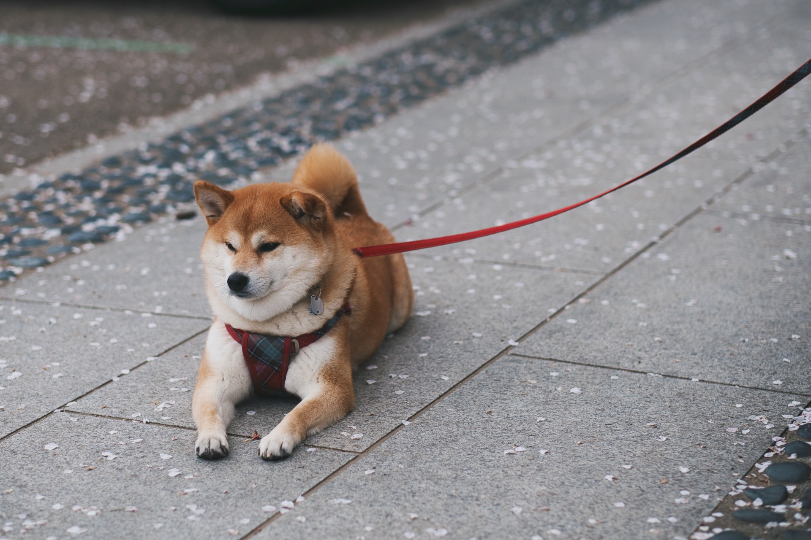
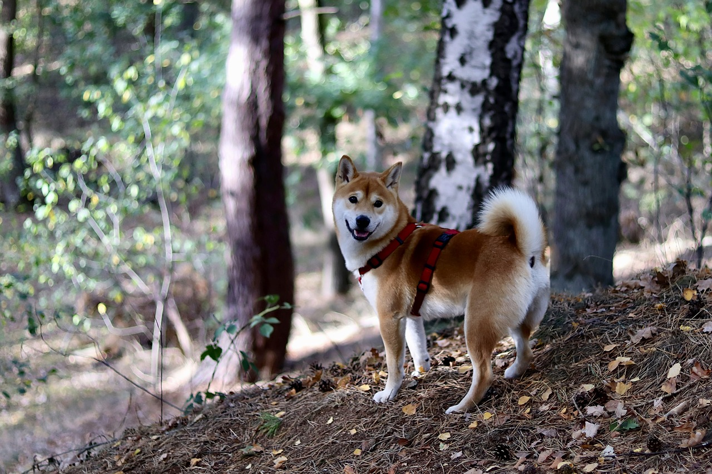
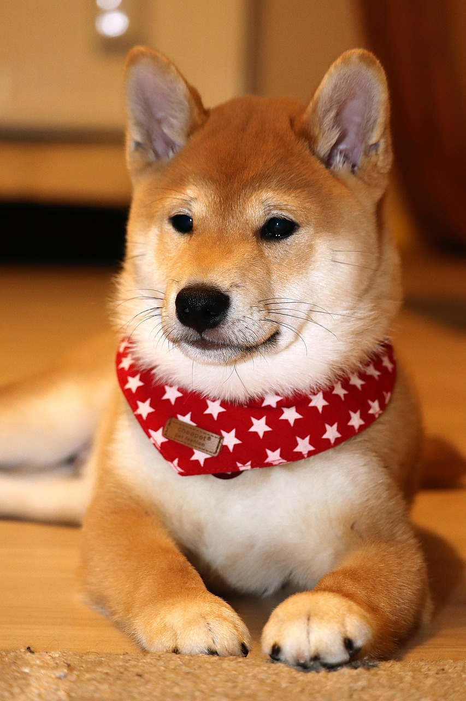
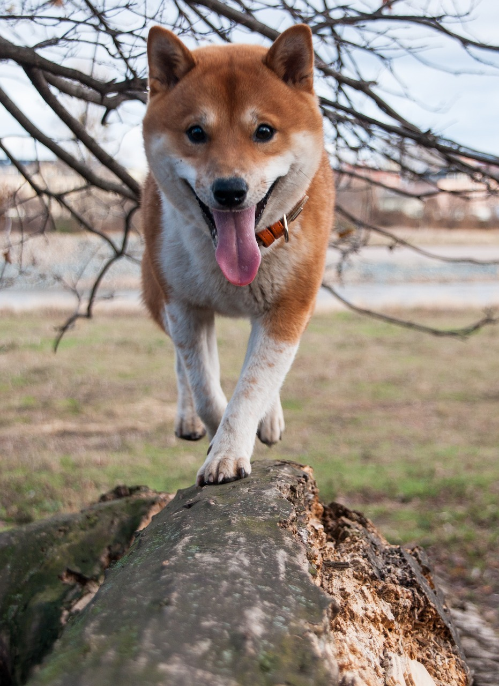

[題名]
♥お気に入り登録者[]人｜閲覧数[]

- 
- 
- 
[名前] [(♂／♀)] [年齢]
-
状況 [ 募集中 ] 種類 [柴犬] サイズ [中型] ペット所在地 [東京]
-
ワクチン接種 [接種済み] 去勢／避妊 [手術済み] 健康状態 [缶詰などのウェットフードを好みます ドライフードの場合は噛み切れずに喉をつまらせてしまいます 散歩はあまりできません 時折、ゼイゼイといった呼吸がみられます]
-
募集の経緯 [★脱走逃走予防に細心の注意と予防策をとること
※受診時などの移送時もキャリーなどに収容
★避妊去勢手術、狂犬病、その他ワクチン接種、ノミ・ダニ、フィラリア予防、定期的なシャンプーの実施
※混合ワクチン、狂犬病予防接種、フィラリア予防実績の有無は不明です。フィラリア陽性の可能性も0では無くあり得ることとなります
【掲載者について】 私は長崎県動物管理所で登録ボランティアとして活動している緒方なな子（大村市在住）と言います。どうぞよろしくお願いいたします。
以下プロフィールより抜粋
★★【日本中で待っている里親さんと保護犬・保護猫との幸せなご縁をつなぐ活動をしています】
★★一人でできることはとっても、小さなこと。
だけど二人、三人でできることをすれば、それはもっともっと大きくなります。
長崎県大村市の管理所で登録ボランティアとして活動しています。
管理所に収容された犬猫の引き出し、搬送、一時預かり、マッチング等の活動を通して、一人でも多くの方々に保護犬猫の存在を知ってもらうこと、一頭でも多くの幸せなご縁をつなぐことを目標にしています。
またボランティア仲間も募集しています。現地にて説明なども行っていますのでぜひお問い合わせください。]性格や特徴 [◆特徴◆
体重18㌔前後
シニア犬、おとなしい]その他備考 [※応募の方に個別でアンケートをお送りします。
【応募をする前にご確認ください】
◆60歳以上のかたは、後見人を立ててください。※後見人の方も同様に身分証、誓約書が必要。
◆未成年の方の場合は保護者の方からご連絡をお願いします。
◆同居家族全員、動物の飼養に関する同意を得た上でご応募をお願いします。
◆できるだけお留守番の少ないご家庭が動物にとって望ましいと考えています。
※留守番時間が長い場合は、できるだけ時間の少ないご家庭を優先することがあります。
◆屋内での飼養環境に細心の注意を払ってください
※エアコンなどでの室温管理は必須です]
-
・単身者応募
[可] ・高齢者応募(６５歳以上)
[可] ・先住ペットがいる方
[] ・[]頭(匹)の譲渡を希望
【理由】[] 募集可能地域 [関東地方] 引き渡し場所 [東京都]
-
保護活動者
里親募集者名[] 会員種別 [] 団体・法人所在地
里親募集者住所[大原ペットサポートチーム]